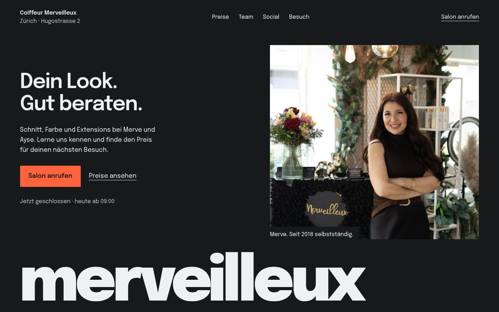
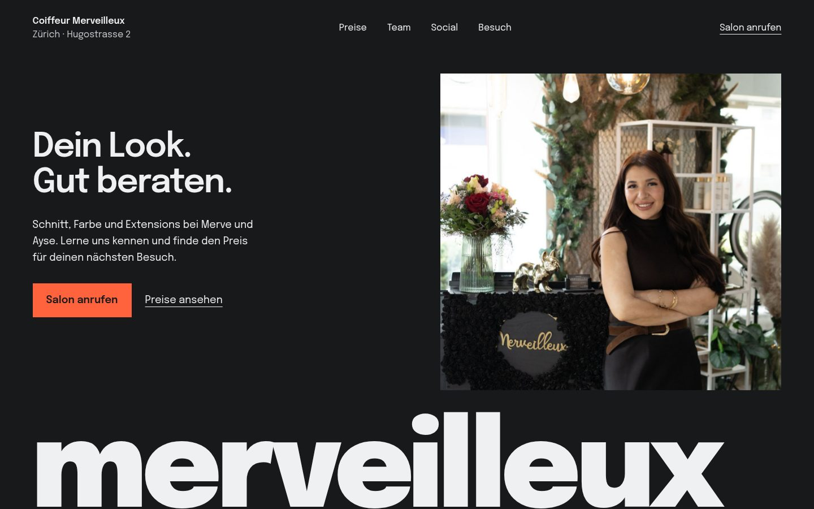

Design-Review
aus Kundensicht.
Coiffeur Merveilleux · 17. Oktober 2026
Eine neue Kundin möchte wissen, wer ihre Haare macht, welche Preise gelten und wie sie den ersten Besuch vereinbart. Demo 2 ordnet die Seite nach diesen Fragen.
Die Entscheidung erleichtern
| Kundenfrage | Umsetzung in Demo 2 |
|---|---|
| Was kostet mein Wunsch? | Preise direkt nach dem Hero, vier verständliche Kategorien, vollständige Originalangaben. |
| Wem vertraue ich mein Haar an? | Merve und Ayse mit echten Portraits und belegter gemeinsamer Geschichte. |
| Wie sieht es dort aus? | Echte Salonbilder, Vergrösserung und direkte Instagram-/TikTok-Profile. |
| Was mache ich als Nächstes? | «Salon anrufen» mit realer Telefonnummer. Eine optionale Gesprächsnotiz bleibt im Browser. |
Überzeugen mit belegten Angaben
Der Nasher-Verweis wurde als Wunsch nach klarer Positionierung, sichtbarer Kompetenz und geringer Unsicherheit umgesetzt. Die Texte sind eigenständig. Eine Empfehlung oder Beteiligung von Jack Nasher wird nicht behauptet.
Keine erfundenen Bewertungen, Vorher-Nachher-Belege oder künstlichen Fristen. Die echten Angebote werden mit Preis und offenem Hinweis zur Gültigkeit gezeigt.
Gestaltung und Skills
Taste: «Name as a monument», Seed 384905852. Grosse Epilogue-Schrift, Graphit und Orange; der Salonname schliesst den Hero ab. Copywriting ordnet die Argumente, UI/UX Pro Max ergänzt Fokus, Kontrast und mobile Bedienung.
Der gstack-Skill «design-review» liefert das Prüfraster. Seine separate Laufzeit ist hier nicht installiert; die Prüfung verwendet den vorhandenen Playwright-Browser und den Impeccable-Detektor. Das ist ein dokumentierter Ersatzablauf.
Prüfergebnis
Fünf Korrekturen umgesetzt. Keine offenen hohen Designbefunde. Auf Desktop, Tablet und Handy geprüft, einschliesslich einer unabhängigen Sichtprüfung durch Leo.
- Inhalte bleiben vor dem Scrollen sichtbar; Bewegungen sind bei Reduced Motion ausgeschaltet.
- Die Preiswahl hat einen kontrastreichen Tastaturfokus. Menülinks haben mindestens 44 × 44 Pixel Klickfläche.
- Der Hero ist bereinigt, der Salonname bekommt mehr Platz.
- Die Gesprächsnotiz ist ohne JavaScript deaktiviert. Preise, Telefon und Social-Links bleiben nutzbar.
- Alle zwölf Preiszeilen, vier Bilddialoge, FAQ, Menü und Gesprächsnotiz funktionieren im Produktionsbuild.
Taste-Messung: keine Fehler, ein erklärter Hinweis wegen fehlendem Originalvideo. Die Bewegung verwendet echte Salonfotografie. Interne gestalterische Einschätzung: 7,7/10; keine externe Auszeichnung und keine Conversion-Messung.
Der Design-Detektor meldete drei vermeintlich fehlende Innenabstände. Die gerenderte Seite hat dort 20 bis 57,6 Pixel Abstand; die Quellenscan-Hinweise waren Fehlalarme.
Hero vor und nach der Korrektur


Instagram und TikTok
Beide Profile sind direkt verlinkt. Auf Wunsch lädt ein Klick die offizielle öffentliche Profileinbettung. Die Plattform kann eine Anmeldung verlangen oder die Einbettung blockieren; «Profil öffnen» bleibt deshalb jederzeit verfügbar. Es gibt keine Kontoanmeldung, API-Synchronisierung oder Veröffentlichung von Posts.
Für den echten Betrieb offen
- Aktionsgültigkeit und aktuelle Preise vom Salon bestätigen lassen.
- Originale, zusammengehörende Vorher-Nachher-Fotos ergänzen, sobald sie vorliegen.
- Eine gewünschte echte Online-Buchung mit dem Salon verbinden.
Demo 1 bleibt erhalten. Die originale Salon-Domain wird durch diese Vorschau nicht verändert.
Demo 2 öffnen